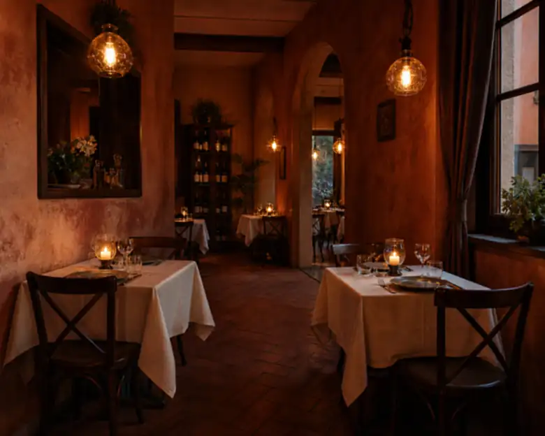
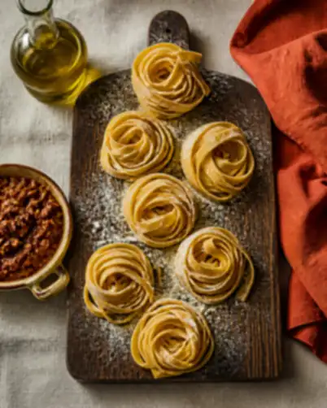
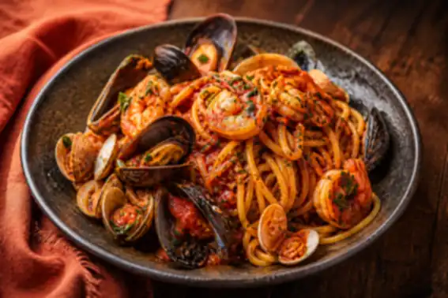
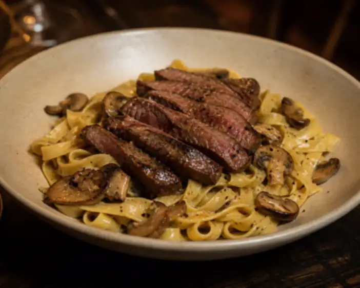
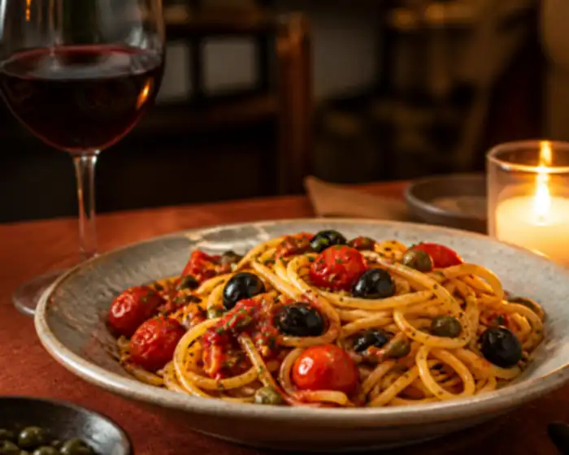
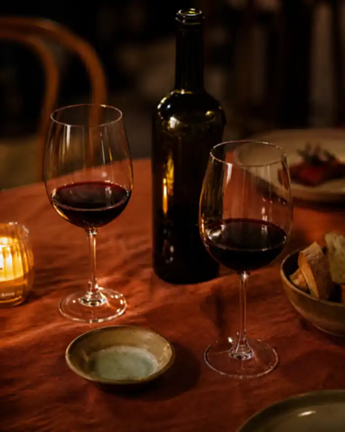

Osteria Ragu — Okjeong, Yangju
매일 뽑는 생면,
계절을 담은 소스
옥정동 KB타워 1층의 작은 이탈리안 오스테리아. 그날 쓸 면을 직접 뽑고, 계절마다 바뀌는 소스로 한 접시를 냅니다.
- 생면 자가제면
- 채식 메뉴
- 콜키지
- 단체석 · 유아의자
- KB타워 지하 3시간 무료
휴무일은 매달 바뀝니다. 이번 달 휴무는 위 공지와 매장 앞 안내로 확인해 주세요.

Monthly Notice
이번 달 휴무 안내
매주 목요일 휴무
2026년 11월 기준입니다. 휴무일은 매달 달라지며, 다음 달 휴무는 매월 초 이 배너와 인스타그램에 함께 올립니다.
- 영업시간
- 11:30 – 22:00
- 브레이크
- 15:00 – 17:00
- 라스트오더
- 21:00
휴무·영업시간은 매장 사정으로 달라질 수 있습니다. 방문 전 전화 확인을 권장합니다.
Season Journal
계절마다 바뀌는 한 접시
인스타그램에 남긴 시즌 메뉴를 날짜순으로 모았습니다.
해산물 토마토 파스타
홍합·새우·백합·오징어를 매콤한 토마토 소스에. 시즌의 마지막 접시였습니다.
스테이크 딸리아떼레
스테이크의 육향에 버섯과 트러플 오일을 겹친 9월의 생면.
푸타네스카
엔초비·올리브·케이퍼의 짠맛으로 완성한 나폴리식. 여름 한 달을 채운 메뉴.
트러플 화이트 라구
진한 화이트 라구 위에 트러플 향을 올린, 짧게 예고한 시즌 메뉴.
지난 메뉴는 인스타그램 공지(@osteriaragu)를 기준으로 정리했습니다.
Visit
매장 안내
좌석과 주차
단체석 · 유아의자
KB타워 지하주차장 3시간 무료
Gallery
오스테리아의 하루
면을 뽑는 아침부터 저녁의 한 잔까지.





안내 인스타 피드 소재를 참고해 제작한 예시 이미지이며 실제 제작 시 매장 사진으로 교체됩니다.
Reservation & Rental
예약 · 대관 문의
단체 예약과 공간 대관은 전화로 문의해 주세요. 인원과 날짜를 알려 주시면 가능 여부와 비용을 안내드립니다.